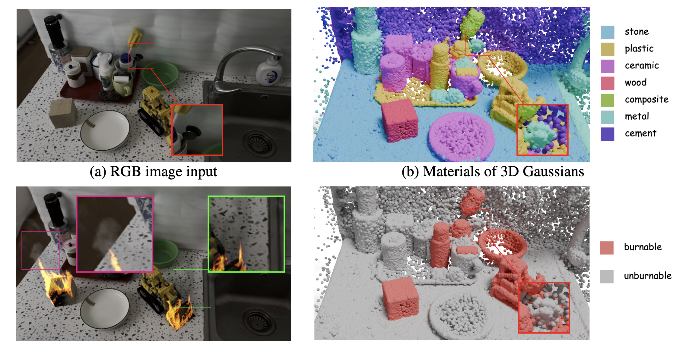
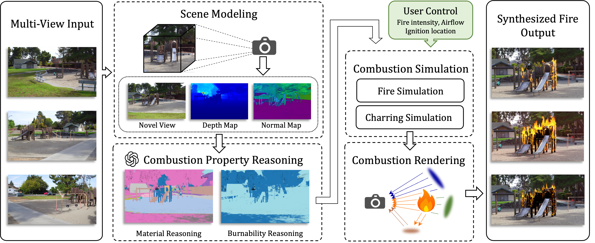

We consider the problem of synthesizing photorealistic, physically plausible combustion effects in in-the-wild 3D scenes. Traditional CFD and graphics pipelines can produce realistic fire effects but rely on handcrafted geometry, expert-tuned parameters, and labor-intensive workflows, limiting their scalability to the real world. Recent scene modeling advances like 3D Gaussian Splatting (3DGS) enable high-fidelity real-world scene reconstruction, yet lack physical grounding for combustion. To bridge this gap, we propose FieryGS, a physically-based framework that integrates physically-accurate and user-controllable combustion simulation and rendering within the 3DGS pipeline, enabling realistic fire synthesis for real scenes. Our approach tightly couples three key modules: (1) multimodal large-language-model-based physical material reasoning, (2) efficient volumetric combustion simulation, and (3) a unified renderer for fire and 3DGS. By unifying reconstruction, physical reasoning, simulation, and rendering, FieryGS removes manual tuning and automatically generates realistic, controllable fire dynamics consistent with scene geometry and materials. Our framework supports complex combustion phenomena—including flame propagation, smoke dispersion, and surface carbonization—with precise user control over fire intensity, airflow, ignition location and other combustion parameters. Evaluated on diverse indoor and outdoor scenes, FieryGS outperforms all comparative baselines in visual realism, physical fidelity, and controllability.
Fire synthesis results on real-world scenes. Our approach achieves photorealistic, physically plausible combustion effects, including fire propogation along combustible materials, smoke dispersion and surface carbonization, etc.

Combustion-relevant material properties are estimated for each Gaussian in reconstructed 3DGS scene.
Using the GPT-4o API, a typical scene costs only about $0.55 in total, making our pipeline highly cost-efficient.
Our simulator produces flames comparable to Blender’s, runs 4.1x faster, and naturally captures internal heat transfer and flame propagation.
The simulations were run at the same spatial resolution and under identical ignition conditions, and the results were rendered with our renderer using consistent lighting and camera settings.
Drag slider to compare
Drag slider to compare
As demonstrated, combustion simulation is performed only in air regions, while solid regions are treated as physical boundaries.
Placing a virtual brick above the campfire in the Firewood scene splits the fire into two streams.
Our combustion simulation framework provides users with a high degree of control over key aspects of the fire dynamics, including ignition location, fire intensity, and airflow. These controls enable precise authoring of dynamic fire effects without manual 3D modeling or complex simulation setup.
We compare with Runway Gen-3 Alpha Turbo, a leading model for video-to-video generation. Video generation methods significantly changes the original scene's appearance and structure. Furthermore, its fire lacks physical plausibility, failing to capture core combustion dynamics. In contrast, FieryGS generates visually authentic and physically grounded fire effects, reproducing the evolution of ignition, flame and smoke spread, and scene illumination.

@InProceedings{shen2026fierygs,
title = {FieryGS: In-the-Wild Fire Synthesis with Physics-Integrated Gaussian Splatting},
author = {Qianfan Shen and Ningxiao Tao and Qiyu Dai and Tianle Chen and Minghan Qin and Yongjie Zhang and Mengyu Chu and Wenzheng Chen and Baoquan Chen},
booktitle = {The Fourteenth International Conference on Learning Representations},
year = {2026},
url = {https://openreview.net/forum?id=ziKFH7whvy}
}